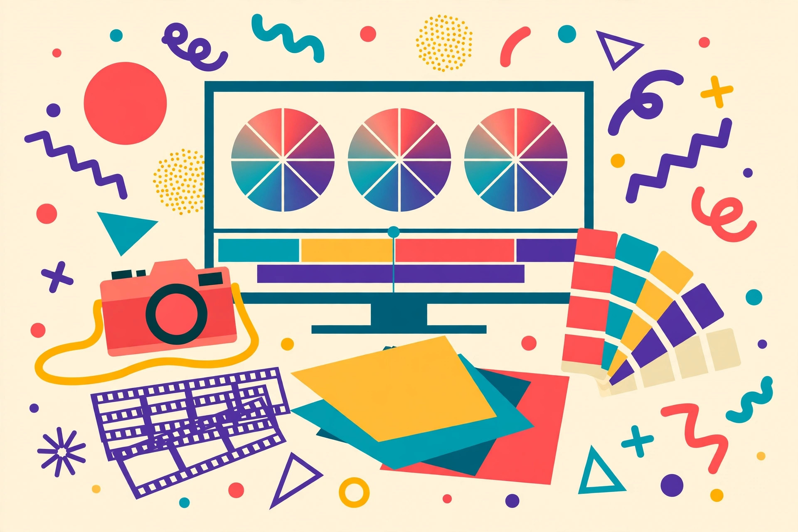
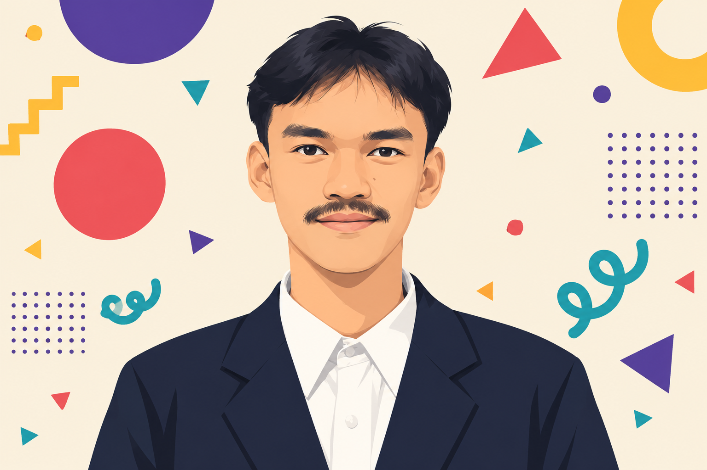

Kreator Visual
Penyuntingan foto & video dan fotografi sejak SMK — konten rapi, tajam, dan siap publikasi.
PhotoshopPremiere ProFotografi
Bogor, Jawa Barat · Terbuka untuk proyek remote
Editor foto/video dan kreator visual sejak SMK, sekaligus Annotator Data AI & Transcriber tepercaya platform global — 500+ audio selesai dengan rating kualitas 97% (Bahasa Indonesia). Teliti, cepat beradaptasi, dan terbiasa bekerja mandiri maupun kolaboratif.

Saya Elga Bifardika Elfanda, editor foto/video dan kreator visual dengan pengalaman sejak SMK. Keahlian utama saya di Adobe Photoshop, Premiere Pro, dan fotografi — dipadukan dengan pengalaman sebagai Annotator Data AI dan Transcriber di platform global seperti Alignerr, CrowdGen, dan OneForma.
Di dunia data, saya menyelesaikan 500+ audio dengan rating kualitas 97% Bahasa Indonesia dan 88,37% Bahasa Inggris, serta mengembangkan skrip otomatisasi untuk pengujian Web3. Latar belakang penjualan (peringkat lima besar dalam dua bulan) dan perhotelan mengasah komunikasi klien dan disiplin kerja saya.
Saya terbiasa bekerja mandiri maupun kolaboratif — di lapangan maupun di depan komputer.
Klik setiap kartu untuk melihat detailnya.

Penyuntingan foto & video dan fotografi sejak SMK — konten rapi, tajam, dan siap publikasi.
Transkripsi, pelabelan audio, dan evaluasi data pelatihan AI untuk platform global.
Skrip otomatisasi alur kerja, pengujian testnet kontrak pintar, dan verifikasi data otomatis.
Klik setiap pengalaman untuk membuka rinciannya.
Universitas Pakuan, Bogor · 2018 — 2023
Mata kuliah relevan:
Punya proyek penyuntingan visual, transkripsi, anotasi data, atau pengujian Web3? Kotak masuk saya selalu terbuka — saya akan membalas secepat yang saya bisa.
elgabifardikaelfanda@gmail.com